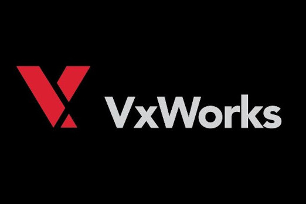
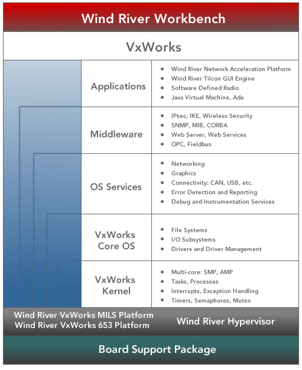

Why VxWorks?
Real-time embedded systems need a robust real-time operating system (RTOS) that leverages the latest and greatest enhancements in processor and hardware technology.
VxWorks RTOS is the industry leading real-time operating system (RTOS). For more than 35 years, the VxWorks® real-time operating system (RTOS) has been chosen by global industry leaders as the trusted foundation to power billions of safety-critical intelligent devices, machines, and systems. Its rich functionality helps customers deploy innovative products while lowering costs and shortening production cycles.
Why is VxWorks the RTOS for your next project?
Key characteristic of VxWorks
- Proven: VxWorks is the RTOS that powers more than 1 billion real-time systems across the globe, from small consumer products to commercial airliners. When the consequences for failure are expensive or, worse, life threatening, the VxWorks RTOS is the only choice. After 30 years of RTOS leadership and consistently successful deployments, Wind River is the name you know you can trust.
- Optimised: The VxWorks RTOS has been optimised for performance, determinism, and code footprint on each processor platform it runs on. The VxWorks RTOS is also optimised for specialised hardware support for such features as network acceleration and graphics. Why waste processing power on a non-optimised RTOS?
- Innovative: The first RTOS with 32-bit and 64-bit processing, multi-core and multi-OS support, and diverse connectivity options, VxWorks provides our customers with the leading-edge RTOS functionality they require to stay competitive. Why go with an RTOS that doesn’t provide the solutions you need to take advantage of the latest technology?
Unparalleled Innovation
VxWorks drives RTOS innovation in key requirement areas for embedded systems. By their very nature, embedded systems are constrained by memory, performance, and power consumption. Application requirements continuously grow to satisfy new safety and security standards and customer value criteria such as rich user interfaces and connectivity. VxWorks meets these growing requirements with unparalleled RTOS innovation:
- Multi-core/multi-OS: VxWorks is designed for use in various multi-core configurations as a single operating system in symmetrical multiprocessing (SMP) and asymmetrical multiprocessing (AMP) modes or as a guest RTOS on top of Wind River Hypervisor.
- Scalability: VxWorks offers robust and reliable RTOS performance on small memory- and CPU-constrained devices up to full 64-bit multi-core systems for high-end processing. Because of this scalability, VxWorks is the ideal RTOS for creating a common software platform for a product line of embedded devices.
- Security and safety: Our leadership in safe and secure systems includes a certifiable RTOS for very stringent safety standards such as FAA/RTCA DO-178B/EUROCAE ED-12B Level A, IEC 61508, and ARINC 653. VxWorks also provides a multilevel secure (MLS), High Robustness RTOS for the demanding requirements of the Common Criteria and National Information Assurance Partnership (NIAP). VxWorks is the first RTOS to be certified under Wurldtech’s Achilles certification program, an internationally recognized standard for industrial cyber-security.
- Connectivity: VxWorks provides industry-leading advanced networking solutions for every facet of embedded systems communications, from device to device via USB, and core to core in an AMP multi-core system with MIPC.
- Graphics: VxWorks RTOS and Wind River Media Library form a robust platform for embedded graphics solutions. With Wind River Tilcon Graphics Suite, developers have a complete graphical user interface (GUI) development system for next-generation devices.
Significant Strengths
At Wind River, we take pride in the innovations in VxWorks that have made it the No. 1 RTOS in the world, and we’re committed to continued innovation in each of our core strength areas:
- Footprint: VxWorks has a completely configurable and tunable small memory footprint for today’s memory-constrained systems. You control how much of the operating system you need.
- Real-time performance: Capable of dealing with the most demanding time constraints, VxWorks is a high-performance RTOS tuned for both determinism and responsiveness.
- Reliability: A high-reliability RTOS, VxWorks provides certification evidence required by strict security standards. Even for non-safety-critical systems, VxWorks is counted on to run forever, error free.
- Scalability: An indispensable RTOS foundation for very small-scale devices, large-scale networking systems, and everything in between, VxWorks is the first RTOS to provide full 64-bit processing to support the ever growing data requirements for embedded real-time systems. VxWorks is scalable in terms of memory footprint and functionality; you will tune it to the exact needs of your project.
VxWorks Industry Specific Profiles
VxWorks delivers a rich set of features out of the box, so customers can more quickly and efficiently build breakthrough devices for the Internet of Things (IoT). Optional industry and technology add-on profiles enhance VxWorks with a broad assortment of capabilities that help our customers meet technology and certification requirements specific to their industry.
VxWorks Technology Specific Profiles
VxWorks add-on technology profiles facilitate rapid development of unique features and capabilities necessary for specialised applications.
VxWorks Certified Platforms
VxWorks safe and secure platforms deliver the foundation companies need to address the security and safety aspects of critical applications, including certification evidence required for stringent certifications by standards bodies:
- Wind River VxWorks 653 Platform delivers complete ARINC 653 Part 1, Supplement 2 conformance and expands the ARINC 653 XML configuration capabilities to enable a true multi-vendor platform that supports fully independent RTCA DO-297/EUROCAE ED-124 IMA supplier sourcing.
- Wind River VxWorks Cert Platform provides a proven safety critical software development environment for delivering applications that must be certified to the requirements of RTCA DO-178B or IEC 61508 (functional safety of electrical/electronic/programmable electronic safety-related systems [E/E/PES]) and related safety critical software standards. Complete certification evidence is provided for DO-178B and IEC 61508.
- Wind River VxWorks MILS Platform delivers the security foundation aerospace and defense companies need to meet the real-time operating system requirements for high robustness (EAL6+) multilevel secure systems.
VxWorks – Architecture / Processor Family Support

Intel
- Pentium family
- Xeon
- Xeon LV
- Core
- Core 2 Duo
- Atom
MIPS
- MIPS 4Kx
- MIPS 5Kx
- MIPS 24Kx
- MIPS 34Kx
- MIPS 74Kx
- Cavium OCTEON CN3XXX
- Cavium OCTEON Plus CN5XXX
- Cavium OCTEON Plus CN63XX
- Netlogic (formerly RMI) XLR, XLS
- Altera MP32
ARM
- ARM7
- ARM9
- ARM11
- ARM11 MPCore
- ARM Cortex A8
- ARM Cortex A9 MPCore
PowerPC
- PowerPC 40x
- PowerPC 44x
- PowerPC 60x
- PowerPC 7xx
- PowerPC 74xx
- PowerPC 83xx
- PowerPC 85xx, 8572
- PowerPC 86xx, 8641d
- QorIQ P20xx
- QorIQ P4080
- Extensive multi-core and multiprocessing support: Use hardware to its fullest potential. VxWorks supports 32-bit and 64-bit multi-core processors based on Intel®, Arm®, Power, and RISC-V architectures. Its comprehensive processor support allows OS configurations for asymmetric multiprocessing (AMP), symmetric multiprocessing (SMP) with CPU affinity to address bound multiprocessing (BMP) scenarios, and hardware-optimized multi-core acceleration.
- OCI containers: Deploy applications at the speed of IT. Package and deploy all applications using IT-like tools and methods. Push your applications to standard container registries (such as Docker Hub, Amazon ECR, or Harbor) and pull them from your deployed VxWorks-based devices. Use Kubernetes for container orchestration.
- Security: Start with a foundation that adapts the security response to the threat. VxWorks integrates an extensive and continuously evolving set of security capabilities that map to the CIA triad. From booting operations to power down, these capabilities allow architects to develop a level of security appropriate for the attack surface and threats unique to their applications and environments.
- Certifiable: Meet regulatory requirements for your deployment. VxWorks has an extensive portfolio of safety certificationhistory, including 600+ programs with more than 360 individual customers. Its robust safety features provide advanced time and space partitioning capabilities to enable reliable consolidation of multiple applications with different levels of criticality on a single or multi-core platform. Additionally, conformance to standards such as POSIX® and the FACE™ Technical Standard have been leveraged in the certification of VxWorks to DO-178C, IEC 61508, IEC 62304, and ISO 26262 safety standards.
- Rich connectivity and communications: Employ the broad range of communications necessary in a connected world. VxWorks supports IPv4 and IPv6 stacks, Routing Information Protocol (RIP), quality of service (QoS), and more. Additionally, VxWorks enables Time-Sensitive Networking (TSN), guaranteeing real-time communications and packet delivery within a bounded time or latency on a switched Ethernet network. VxWorks supports innovative industrial applications based on OPC Unified Architecture (OPC UA). It also supports SocketCAN, used in automotive applications, and provides host, target, and OTG USB support.
- Broad board support: Speed time-to-market by beginning from a solid starting point. Working with our ecosystem of partners, we have optimized VxWorks for the latest advanced processors and SOCs. It also includes the most extensive list of board support packages in the embedded software industry, providing early prototyping, cost savings, and flexibility of choice.
- Customization and tuning: Enjoy immense flexibility in customizing your product. Tailor your design to your specific needs with access to full source code, and/or use all the various configuration options to include or exclude predefined components and/or parameters.
- Virtualization: Choose from a number of flexible deployment options, from native to cloud. VxWorks is available as a guest operating system for a variety of virtualization environments, including but not limited to Wind River® Helix™ Virtualization Platform, QEMU, VMware, and KVM.
- Fault-tolerant file system: Take advantage of integrated fault tolerance. VxWorks comes with a fault-tolerant file system that can be certified.
- Multimedia: Benefit from out-of-the-box UI support. VxWorks offers support for many standard graphic libraries, such as OpenGL, OpenGL ES, OpenCV, and Vulkan, as well as libraries that handle JPEG and PNG images.
- AI/ML: Digital transformation and creation of added value/service are at your fingertips. Technologies such as pandas, Tensorflow Lite, and others are integrated to easily add AI/ML applications into the device.
- Python: Your access is out of the box and fully enabled. VxWorks supports Python, an easy-to-learn programming language that is ideal for quick prototyping, testing, and integrating high-level programs.
- Feedback loop: Enjoy digital transformation enablement. VxWorks comes with a variety of communication protocols allowing developers to collect device information and send it to the cloud for mining and analysis.